FOUR PAWS, ALL FAMILY
Daisy.
A beagle nose.
An adventure in every walk.
Floppy ears, soft brown eyes, and a place all her own in our family.
A little of her worldTHE TAN FAMILY / DAISYSmall moments. A very loved beagle.
THROUGH THE EVERYDAY
Life at Daisy’s pace.
Window watching. Sunny walks.
And the best company.
At home ·


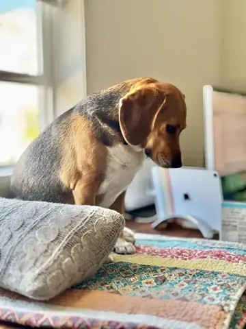
At home · At home · Out & about · Together ·


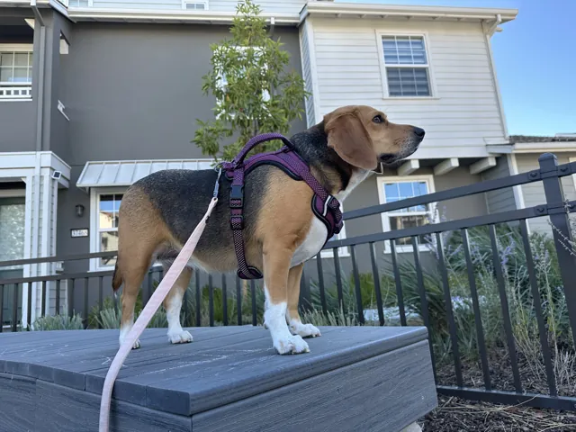
Out & about · Together ·

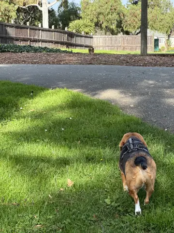
Out & about ·
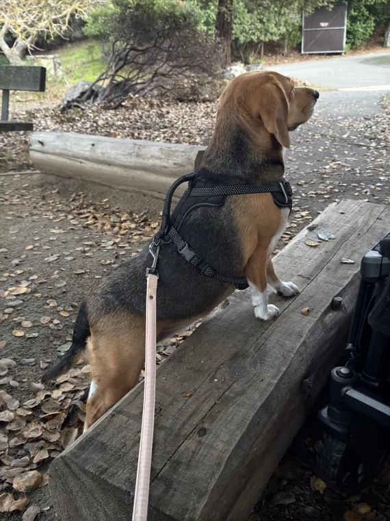
Out & about ·
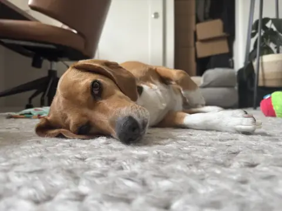
At home · At home ·

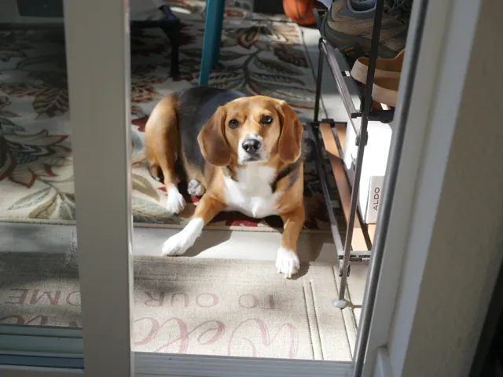
At home ·
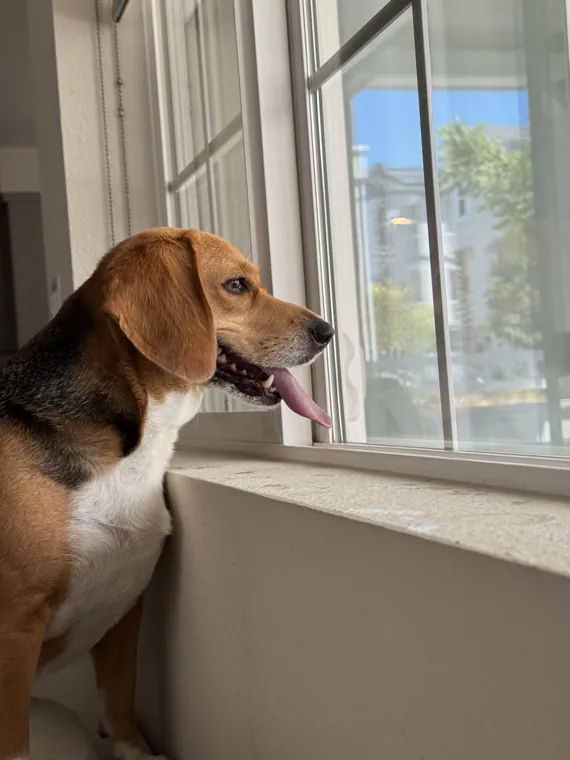
At home ·
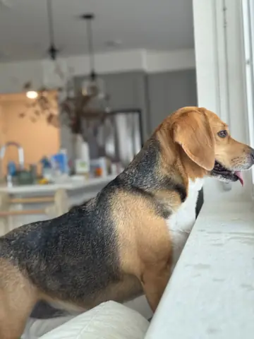
At home ·
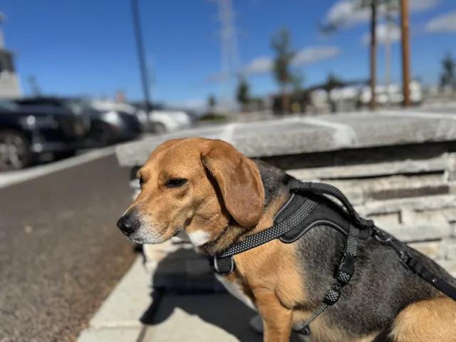
Out & about · At home · At home · Together ·


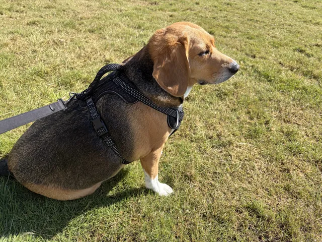
Out & about ·
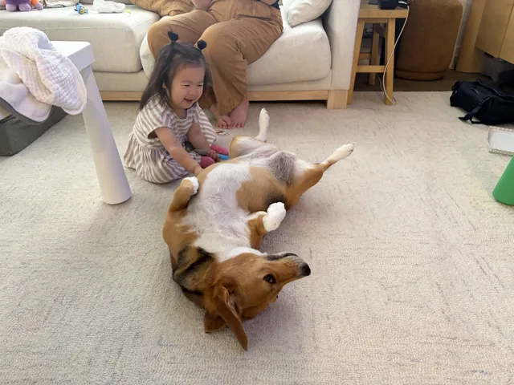
Together ·
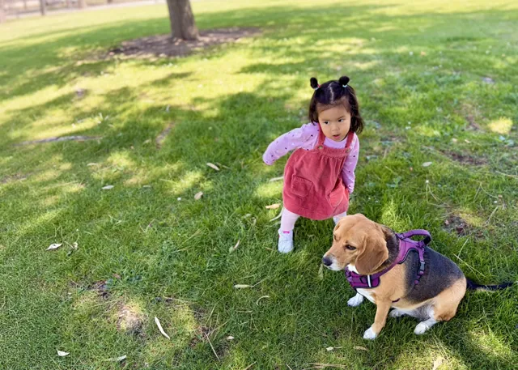
Together ·
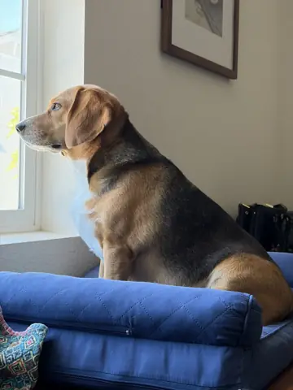
At home · At home · At home ·


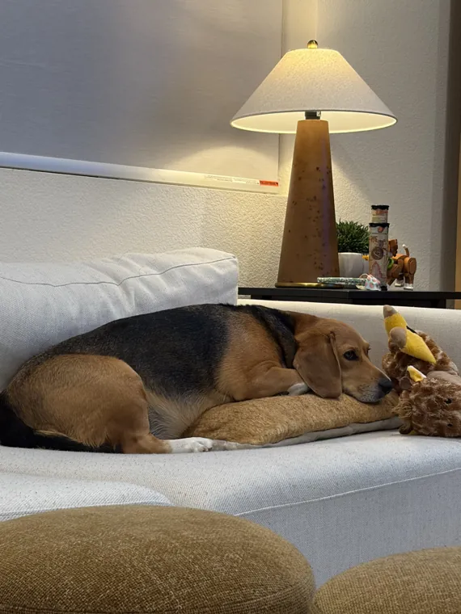
At home ·
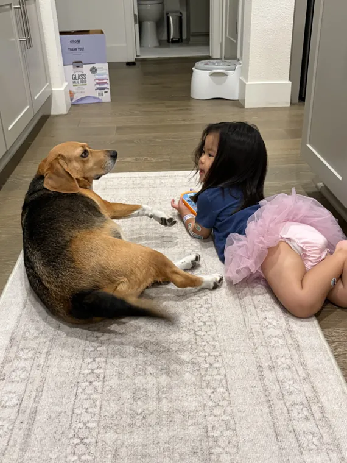
Together ·Every little adventure
is better together.